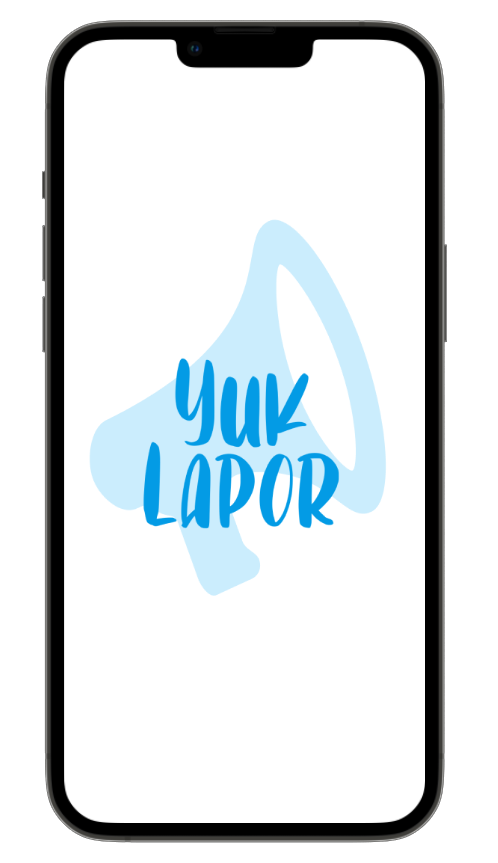
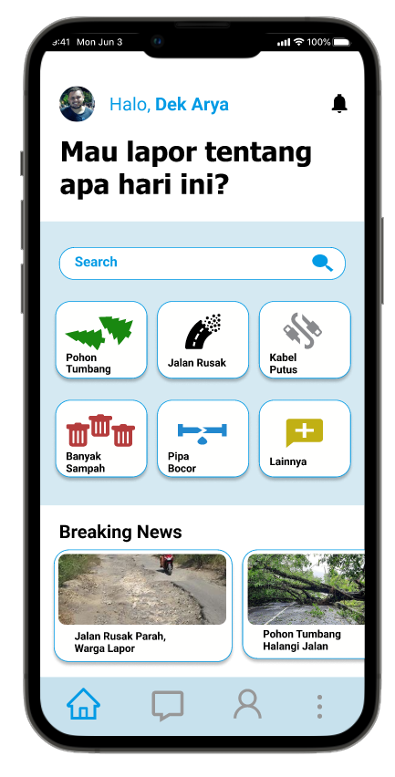

Latar Belakang
Lalu Lintas yang aman dan nyaman merupakan keinginan semua pengguna jalan, tetapi ada beberapa faktor yang dapat menghambat dan mengurangi kenyamanan lalu lintas, seperti pohon yang tumbang, kabel putus, jalan yang rusak, sampah menumpuk, pipa saluran air yang bocor dan lain-lain. Oleh karena itu, diperlukan sebuah inovasi baru yang dapat digunakan dalam membantu menyelesaikan masalah-masalah tersebut.
Diciptakanlah aplikasi “Yuk-Lapor” yang bekerjasama dengan instansi dan dinas terkait untuk menyelesaikan masalah penghambat lalu lintas. Dengan adanya aplikasi “Yuk-Lapor” diharapkan dapat menjawab permasalahan-permasalahan yang dapat mengambat dan mengurangi kenyamanan lalu lintas bagi pengguna jalan.
Menu
Pohon Tumbang
Menu yang digunakan oleh pengguna untuk melaporkan jika terdapat pohon tumbang yang menganggu lalu lintas
Jalan Rusak
Menu yang digunakan oleh pengguna untuk melaporkan jika terdapat jalan yang rusak yang menganggu lalu lintas
Kabel Putus
Menu yang digunakan oleh pengguna untuk melaporkan jika terdapat kabel putus yang menganggu lalu lintas
Banyak Sampah
Menu yang digunakan oleh pengguna untuk melaporkan jika terdapat banyak sampah yang menganggu lalu lintas
Pipa Bocor
Menu yang digunakan oleh pengguna untuk melaporkan jika terdapat pipa bocor yang menganggu lalu lintas
Cara Penggunaan
1. Login ke Aplikasi Yuk-Lapor
2. Pilih Menu yang ingin Dilaporkan
3. Tambahkan foto , keteangan dan lokasi
4. Lalu Kirim Laporan